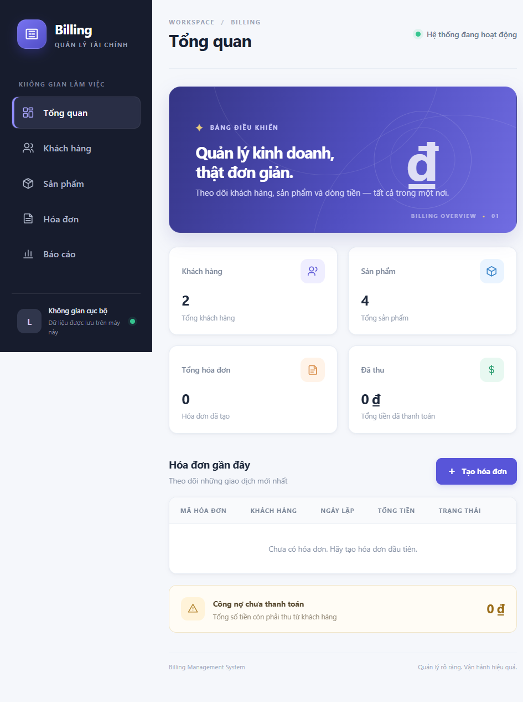
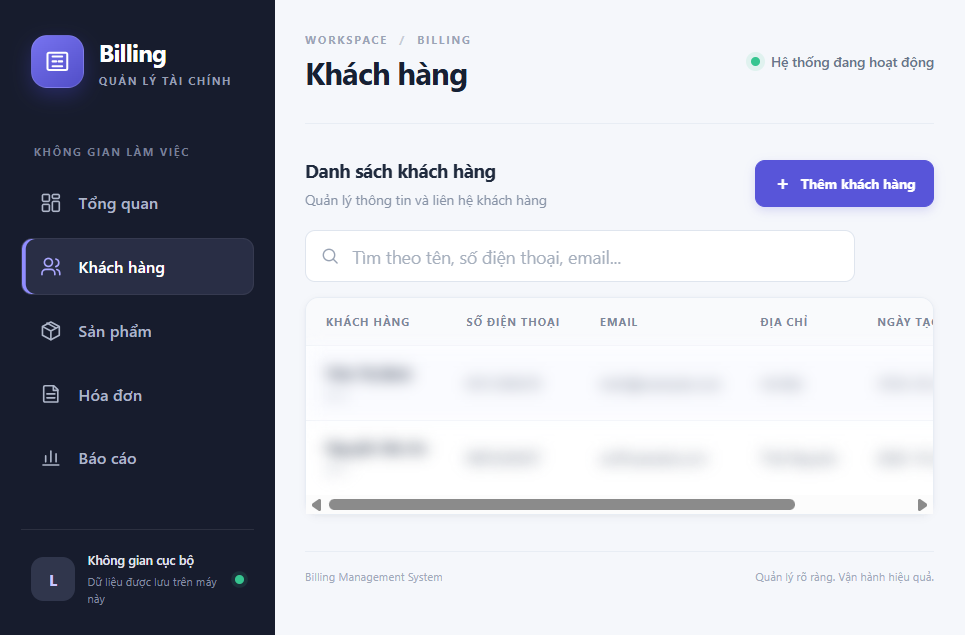
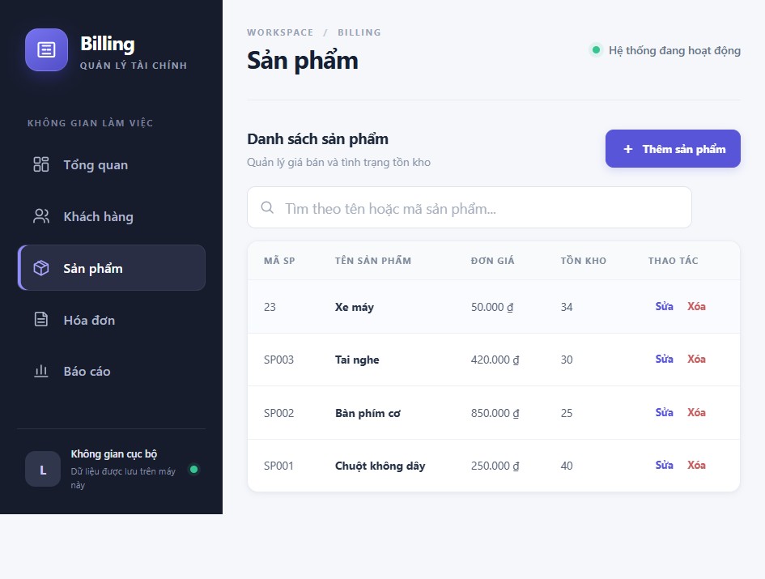
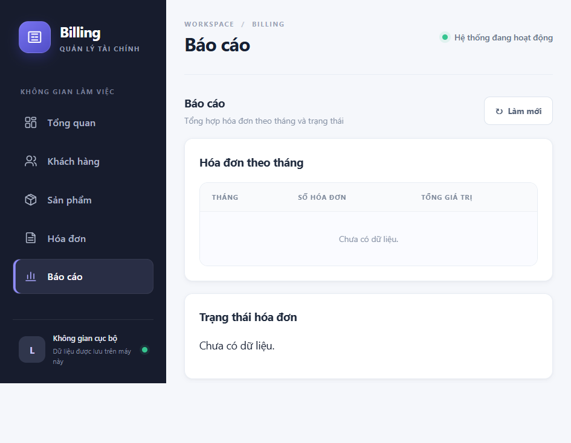

PostgreSQL · Nginx · Prometheus · Grafana · Loki
| Sinh viên thực hiện | [HỌ VÀ TÊN] |
| Mã số sinh viên | DTC245200669 |
| Lớp / khóa | [LỚP / KHÓA] |
| Giảng viên hướng dẫn | [HỌ TÊN GIẢNG VIÊN] |
Báo cáo trình bày quá trình đóng gói, triển khai và quan sát một hệ thống quản lý hóa đơn trên Docker Compose. Hệ thống ban đầu là ứng dụng Flask với giao diện HTML/CSS/JavaScript và cơ sở dữ liệu SQLite. Phiên bản triển khai được chuẩn hóa theo mô hình nhiều dịch vụ: Flask/Gunicorn xử lý nghiệp vụ; PostgreSQL lưu dữ liệu; pgAdmin cung cấp giao diện quản trị cơ sở dữ liệu; Nginx làm reverse proxy HTTPS; Prometheus thu thập metrics; Grafana trực quan hóa; Loki lưu log; Promtail thu thập Docker logs.
Mục tiêu chính là thực hành đầy đủ quy trình vận hành phần mềm: tổ chức mã nguồn và cấu hình, mô hình hóa mạng container, lưu trữ bền vững, reverse proxy, quan sát metrics/log, và giảm quyền thực thi. Tệp Compose mô tả toàn bộ stack để có thể kiểm tra cấu hình và tái tạo môi trường từ một lệnh. Các mật khẩu không nằm trong mã nguồn mà được tạo cục bộ vào tệp môi trường bị Git loại trừ.
Docker Compose; Flask; PostgreSQL; pgAdmin; Nginx; HTTPS; Prometheus; Grafana; Loki; Promtail; hardening; observability.
Cập nhật tài liệu: 22/10/2026. Mã số sinh viên được điền theo tài khoản GitHub cung cấp; bổ sung họ tên, lớp, trường và giảng viên trước khi nộp.
02Ứng dụng quản lý hóa đơn cần đồng thời đảm bảo tính sẵn sàng, tính toàn vẹn dữ liệu và khả năng truy vết. Nếu chỉ chạy Flask trực tiếp trên máy cá nhân, cấu hình phụ thuộc môi trường và khó tái tạo. Việc tách các vai trò thành container giúp mô tả quan hệ phụ thuộc, cổng mạng, healthcheck, volume và quyền thực thi một cách tường minh. Công cụ monitoring và logging giúp người vận hành xác định được trạng thái dịch vụ cũng như nguyên nhân lỗi.
Website có các trang tổng quan, khách hàng, sản phẩm, hóa đơn và báo cáo. Người dùng có thể tạo/sửa/xóa khách hàng và sản phẩm, lập hóa đơn có kiểm tra tồn kho, ghi nhận thanh toán một phần hoặc toàn bộ, xem lịch sử thanh toán và thống kê công nợ. Flask cung cấp JSON API dưới tiền tố /api; Nginx chuyển tiếp các request HTTPS tới Gunicorn. Endpoint /health kiểm tra kết nối DB; endpoint /metrics xuất counters và histogram cho Prometheus.
| Nhóm | Đầu ra | Minh chứng cần chụp |
|---|---|---|
| Triển khai | Compose khởi chạy toàn bộ dịch vụ | Docker Desktop/terminal, trạng thái healthy |
| Web + DB | Website HTTPS và pgAdmin kết nối PostgreSQL | Trang web, schema/bảng pgAdmin |
| Metrics/logs | Prometheus targets UP, dashboard và LogQL có kết quả | Targets, Grafana, Explore |
| Hardening | Network, header, user và quyền được kiểm tra | Headers, inspect user/network |
Compose tạo ba mạng với mục tiêu khác nhau. Mạng edge dành cho entrypoint Nginx. Mạng data nội bộ nối Nginx, ứng dụng, pgAdmin và PostgreSQL. Mạng observability nội bộ nối exporters, Prometheus, Grafana, Loki, Promtail và các target metrics. Database không publish cổng ra host; các giao diện quản trị chỉ bind loopback.
Các cổng chỉ được publish rõ trong Compose: HTTPS 8443, pgAdmin 5050, Grafana 3000, Prometheus 9090; tất cả bind 127.0.0.1.
04Dockerfile dựa trên Python slim, cài thư viện từ requirements.txt, sao chép mã ứng dụng và giao diện, rồi chạy Gunicorn với hai worker. Ứng dụng chạy bằng UID/GID 10001, filesystem root ở chế độ chỉ đọc và thư mục tạm được giới hạn bằng tmpfs. Compose đợi healthcheck PostgreSQL thành công trước khi chạy lệnh khởi tạo schema. Gunicorn phục vụ ở mạng nội bộ; không mở port 5000 ra host để buộc request người dùng đi qua reverse proxy.
| Bảng | Vai trò | Quan hệ |
|---|---|---|
| customers | Hồ sơ khách hàng | 1-n invoices |
| products | Sản phẩm, SKU, giá và tồn kho | 1-n invoice_items |
| invoices | Mã hóa đơn, ngày, tổng, đã thu, trạng thái | n-1 customers; 1-n items/payments |
| invoice_items | Chi tiết sản phẩm tại thời điểm lập | product_id có thể NULL khi xóa sản phẩm |
| payments | Lịch sử thu tiền và phương thức | n-1 invoices |
Khóa chính dùng identity; khóa ngoại bảo vệ tính toàn vẹn. Xóa hóa đơn áp dụng cascade với chi tiết/thanh toán; khi xóa sản phẩm, snapshot tên và đơn giá trong chi tiết vẫn lưu. Tài khoản billing_app chỉ dùng cho ứng dụng, còn billing_metrics có quyền monitor riêng để exporter đọc chỉ số. Tài khoản bootstrap PostgreSQL không được dùng trong cấu hình ứng dụng.
pgAdmin đăng ký sẵn server nội bộ tên Billing PostgreSQL. Người học đăng nhập giao diện bằng credential pgAdmin trong `.env`, sau đó nhập mật khẩu APP_DB_PASSWORD khi kết nối server DB. Cổng PostgreSQL không được publish. Nếu dự án có file SQLite cũ, startup chỉ nhập dữ liệu khi database PostgreSQL còn trống; import đọc file ở chế độ chỉ đọc, theo thứ tự khóa ngoại và đặt lại identity sequence. Nếu không có file hoặc DB đã có dữ liệu, việc import không chạy lại.
infra/pgadmin/servers.json; cần bổ sung ảnh pgAdmin sau khi chạy stack.Nginx là điểm vào duy nhất cho website. Virtual host TLS lắng nghe cổng 8443, chuyển tiếp request tới billing:5000 bằng DNS service name trong Docker network và gửi các header Host, X-Real-IP, X-Forwarded-For, X-Forwarded-Proto. Giới hạn body 1 MB, timeout kết nối 5 giây và timeout đọc 30 giây giúp giới hạn request bất thường cũng như lỗi backend kéo dài.
Container dùng image Nginx unprivileged. Khi khởi chạy, OpenSSL sinh chứng chỉ RSA 2048-bit có SAN cho localhost và 127.0.0.1, lưu trong tmpfs của container; private key không nằm trong Git hoặc volume dữ liệu lâu dài. Nginx bật TLS 1.2/1.3, session cache và tắt server tokens. Vì CA tự ký không được tin cậy bởi trình duyệt, cảnh báo certificate là dự kiến trong bài lab.
| Header | Mục đích |
|---|---|
| Strict-Transport-Security | Yêu cầu trình duyệt dùng HTTPS trong thời gian hiệu lực. |
| Content-Security-Policy | Giới hạn nguồn script/style/connect và chặn nhúng frame. |
| X-Frame-Options: DENY | Giảm nguy cơ clickjacking. |
| X-Content-Type-Options: nosniff | Không cho trình duyệt đoán MIME type. |
| Referrer-Policy / Permissions-Policy | Giảm dữ liệu referrer và vô hiệu hóa cảm biến không dùng. |
Ứng dụng hiện có inline event handlers, do đó CSP có unsafe-inline cho script/style để duy trì tương thích. Đây là thỏa hiệp cho giao diện học tập; ứng dụng production nên chuyển event handlers và style inline ra tệp riêng để loại bỏ ngoại lệ này. HSTS chỉ phù hợp trong phạm vi demo HTTPS; không bật preload trên tên miền công khai nếu chưa có TLS hợp lệ.
https://localhost:8443 chưa hoạt động để chụp. Ảnh website local ở Phụ lục A không phải ảnh truy cập qua Nginx.Flask xuất billing_http_requests_total theo method, endpoint và status code; histogram billing_http_request_duration_seconds hỗ trợ tính percentile độ trễ. Endpoint /metrics không được expose qua cổng host riêng và chỉ các service cùng mạng observability truy cập. Prometheus scrape mỗi 15 giây bốn nhóm: web, Nginx exporter, PostgreSQL exporter và cAdvisor. Cấu hình thêm Prometheus self-scrape để kiểm tra chính collector.
Grafana provision datasource Prometheus và Loki từ file cấu hình được mount read-only. Dashboard “Billing System Overview” được định nghĩa bằng JSON trong repository: tốc độ request, p95 latency, CPU/bộ nhớ container, PostgreSQL exporter và kết nối Nginx. Dashboard refresh 15 giây, giúp tái tạo nhất quán sau khi xóa container. Tài khoản admin lấy từ `.env`; self-signup bị tắt.
sum(rate(billing_http_requests_total[5m]))
histogram_quantile(0.95,
sum(rate(billing_http_request_duration_seconds_bucket[5m])) by (le))
sum(rate(container_cpu_usage_seconds_total{name=~"/.+"}[5m])) by (name)
pg_up
nginx_connections_active
Dashboard cần thời gian và request thực tế để biểu đồ có dữ liệu. Nếu target DOWN, xem **Status → Targets**, kiểm tra DNS/service, `docker compose ps`, healthcheck, exporter credentials và log Prometheus. cAdvisor trên Docker Desktop có thể báo thiếu một số chỉ số host do khác biệt nền tảng; đánh giá chính container Linux do Docker quản lý.
Container ghi log ra stdout/stderr theo chuẩn Docker. Promtail dùng Docker service discovery thông qua Docker socket, lấy log stream và metadata Compose, sau đó gắn nhãn compose_service và container. Allowlist giới hạn dịch vụ được thu thập ở web, Nginx, DB, pgAdmin, Grafana, Prometheus và Loki. Promtail gửi batch tới Loki qua HTTP nội bộ; Loki lưu index/chunk trong named volume, retention cấu hình một tuần cho bài lab.
Truy vấn bằng Grafana → Explore → Loki. Chọn khoảng thời gian gần đây; mở website hoặc gọi API để phát sinh log. Nhãn có cardinality thấp hơn việc gắn mỗi URL/id vào label. Nội dung log nên tránh mật khẩu, token, email/PII không cần thiết. Cần kiểm tra log exporter và collector nếu Explore không có stream.
| Mục đích | LogQL |
|---|---|
| Xem log ứng dụng | {compose_service="billing"} |
| Lọc request Nginx GET | {compose_service="nginx"} |= "GET" |
| Tìm lỗi PostgreSQL | {compose_service="db"} |~ "(?i)error|fatal" |
Truy vấn thứ nhất hữu ích để xem log chung của backend; truy vấn thứ hai lọc access log theo request GET; truy vấn thứ ba dùng regex không phân biệt hoa/thường để phát hiện thông báo ERROR hoặc FATAL. Có thể thêm bộ lọc theo thời gian, ví dụ last 15 minutes. Chụp ảnh mỗi truy vấn sau khi thực thi và có kết quả; không dùng ảnh cấu hình chưa chạy như minh chứng hoạt động.
| Biện pháp | Triển khai | Giá trị |
|---|---|---|
| Non-root | Flask UID 10001; Nginx unprivileged; PostgreSQL chạy user postgres của image. | Giảm tác động khi tiến trình ứng dụng bị khai thác. |
| Capability | Ứng dụng, exporters, Prometheus, Loki, Grafana bỏ capabilities; cAdvisor chỉ được cấp SYS_ADMIN, SYS_PTRACE, DAC_READ_SEARCH để đọc metrics host. | Giảm quyền kernel không cần thiết; cAdvisor là ngoại lệ có đặc quyền cao hơn. |
| Filesystem | Container web và Nginx read-only; tmpfs giới hạn cho file tạm/TLS. | Giảm khả năng ghi mã độc vào image layer. |
| Network | Database network internal; observability network internal; DB không publish port. | Giảm bề mặt truy cập từ host/LAN. |
| Secrets | Random password cục bộ trong .env bị gitignore; role app và metrics riêng. | Tránh credential tĩnh trong Git và hạn quyền DB. |
| HTTP headers | Nginx TLS và CSP, HSTS, X-Frame-Options, nosniff, Referrer/Permissions Policy. | Giảm nhóm rủi ro phía trình duyệt. |
| Host ports | Giao diện quản trị chỉ bind 127.0.0.1. | Không tự công khai lên interface mạng LAN. |
Ứng dụng hiện không có xác thực người dùng/role nghiệp vụ, nên chỉ phù hợp demo cục bộ. Chứng chỉ self-signed không xác thực danh tính domain; secret trong environment có thể đọc bởi người có quyền quản trị Docker. cAdvisor cần quyền đọc thông tin host và được cấp thêm SYS_ADMIN/SYS_PTRACE/DAC_READ_SEARCH, vì vậy đây là thành phần đặc quyền hơn và cần được đánh giá lại trên production. Promtail dùng Docker socket với quyền kiểm soát lớn; mount chỉ đọc không giới hạn các API quản trị mà client có thể gửi qua socket. Đây là ngoại lệ đáng chú ý so với nguyên tắc least privilege. CSP còn cho phép inline script do frontend có inline event handler. Các image được pin tag nhưng chưa pin digest và cần cập nhật/quét CVE định kỳ.
Bổ sung đăng nhập, CSRF/rate limiting, backup mã hóa, quản lý secret chuyên dụng, chứng chỉ từ CA tin cậy, firewall, pin digest, image scan, cập nhật định kỳ, cảnh báo metrics, kiểm tra phục hồi backup và log retention phù hợp. Không publish pgAdmin, Grafana hoặc Prometheus ra Internet; đặt xác thực mạnh và VPN/SSO nếu cần truy cập từ xa.
09.\scripts\init-env.ps1 trên PowerShell hoặc sh scripts/init-env.sh trên Bash.docker compose config.docker compose up --build -d.docker compose ps, sau đó mở HTTPS và các console localhost.| Kiểm tra | Lệnh / thao tác | Kết quả cần ghi nhận | Trạng thái |
|---|---|---|---|
| Compose | docker compose config --quiet | Cấu hình hợp lệ về cú pháp | ĐẠT (tĩnh) |
| Ứng dụng local | http://127.0.0.1:5000 | Trang local trả HTTP 200; dùng SQLite dev | ĐẠT (local) |
| Compose stack | docker compose up --build -d | Docker engine trả HTTP 500, Docker Desktop vẫn Starting | CHƯA CHẠY |
| HTTPS / pgAdmin | Cổng 8443 / 5050 | Không có container để kiểm thử endpoint | CHƯA KIỂM THỬ |
| Metrics / Grafana | Prometheus targets / dashboard | Chưa có runtime metrics | CHƯA KIỂM THỬ |
| Loki / LogQL | Grafana Explore | Chưa có log stream từ Compose | CHƯA KIỂM THỬ |
| Hardening | Compose / Nginx headers | Cấu hình đọc/kiểm tra tĩnh; response HTTPS chưa xác nhận | ĐẠT (tĩnh) |
starting, WSL distro docker-desktop ở trạng thái stopped và API Linux engine trả HTTP 500. Vì vậy stack chưa được build/run và các yêu cầu runtime còn phải demo, chụp ảnh sau khi sửa Docker Desktop.Ảnh chụp giao diện local thật nằm tại Phụ lục A. Chúng được chụp từ http://127.0.0.1:5000 (chế độ SQLite local), không được xem là bằng chứng Nginx/PostgreSQL/monitoring đã chạy.
docker compose ps docker compose logs --tail=100 billing db nginx docker compose logs -f promtail loki docker compose stop docker compose start docker compose down
Lệnh down xóa container/network nhưng giữ named volumes. Không dùng down -v khi cần giữ database, dashboard và lịch sử metrics/log; lệnh này xóa volumes. Trước khi thay đổi Compose nên xem docker compose config, lưu bản cấu hình, rồi quan sát healthcheck/log sau khi khởi động lại.
Tạo bản sao lưu logic bằng công cụ pg_dump từ container PostgreSQL hoặc pgAdmin, lưu ngoài Docker host và bảo vệ bằng quyền truy cập thích hợp. Ví dụ tạo SQL dump:
docker compose exec -T db sh -c \ 'pg_dump -U "$POSTGRES_USER" -d billing' > billing-backup.sql
Phục hồi cần database đích phù hợp và kiểm tra kết quả sau restore; thử phục hồi định kỳ trên môi trường riêng. Không lưu backup có dữ liệu cá nhân vào repository công khai. Tệp SQLite gốc chỉ được dùng làm nguồn migration một lần; dữ liệu hoạt động sau triển khai nằm trong named volume PostgreSQL.
Đề tài đã thiết kế một bộ triển khai có thể tái tạo cho ứng dụng Billing Management System. Docker Compose mô tả ứng dụng, database, công cụ quản trị, reverse proxy, metrics, dashboard và log tập trung. PostgreSQL tách biệt khỏi host port; Nginx cung cấp điểm truy cập HTTPS tự ký và security headers; Prometheus thu thập chỉ số web/Nginx/PostgreSQL/container; Grafana provision dashboard; Promtail và Loki hỗ trợ truy vấn log bằng LogQL. Các lớp non-root, read-only filesystem, mạng nội bộ, capability drop, secrets ngoài Git và giới hạn host binding giảm bề mặt phơi nhiễm trong phạm vi bài lab.
Qua triển khai, người thực hiện cần nắm luồng kết nối giữa service, phân biệt metrics với logs, hiểu healthcheck không thay thế kiểm thử nghiệp vụ, và nhận biết các giới hạn của môi trường Docker Desktop. Những ngoại lệ được ghi rõ gồm chứng chỉ tự ký, ứng dụng chưa có xác thực, CSP inline và quyền Docker socket của Promtail. Vì vậy, kết quả có giá trị như môi trường học tập, không phải cấu hình production đã được chứng nhận.
Các ảnh được chụp trực tiếp từ trình duyệt ở http://127.0.0.1:5000 ngày 22/10/2026. Đây là server local đang dùng SQLite và dữ liệu mẫu hiện có; không phải ảnh chụp từ Docker Compose, PostgreSQL, Nginx HTTPS, Grafana hoặc Loki. Thông tin khách hàng trong ảnh đã được làm mờ.



